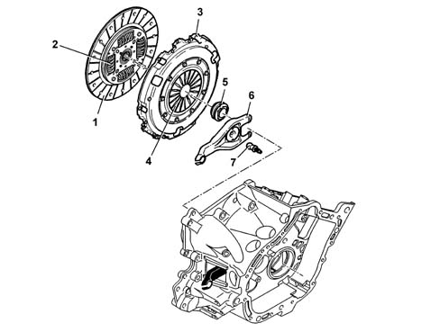
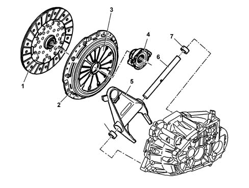
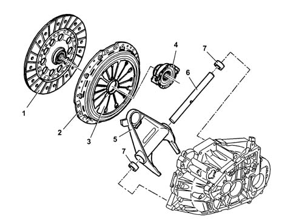

OPERATION
- Path
- Descriptions > 18 CLUTCH UNIT > OPERATION
- Kind
- system description
- Applies to
- all engines; all production periods
- Interactive page
- https://sloeber94.github.io/elrnDB-fUlss/en/#/179006628
Applies to: all engines; all production periods
The pump (5), operated by the clutch pedal, pressurizes the hydraulic circuit and operates the clutch control cylinder (2).
The latter acts on the linkage (3) which "pulls" the thrust bearing, overcoming the action of the pressure plate springs.
This action causes the release of the clutch plate from the flywheel.
When the pedal is released, the action of the diaphragm springs returns the mechanical to the original position.
CLUTCH MECHANISM FOR 2.0 PETROL ENGINES
The diagram below shows the clutch mechanism for the 2.0 petrol engine.

- 1 - Clutch plate
- 2 - Flexible couplings
- 3 - Drip tray
- 4 - Thrust spring
- 5 - Thrust bearing
- 6 - Linkage
- 7 - Pin
CLUTCH MECHANISM FOR 2.0 JTD ENGINES
The diagram below shows the clutch mechanism for the 2.0 JTD engine.

- 1 - Clutch plate
- 2 - Drip tray
- 3 - Thrust spring
- 4 - Thrust bearing
- 5 - Linkage
- 6 - Linkage pin
- 7 - Bushes
CLUTCH MECHANISM FOR 2.2 JTD ENGINES
The diagram below shows the clutch mechanism for the 2.2 JTD engine.

- 1 - Clutch plate
- 2 - Drip tray
- 3 - Thrust spring
- 4 - Thrust bearing
- 5 - Linkage
- 6 - Linkage pin
- 7 - Bushes